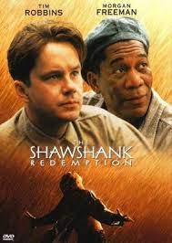
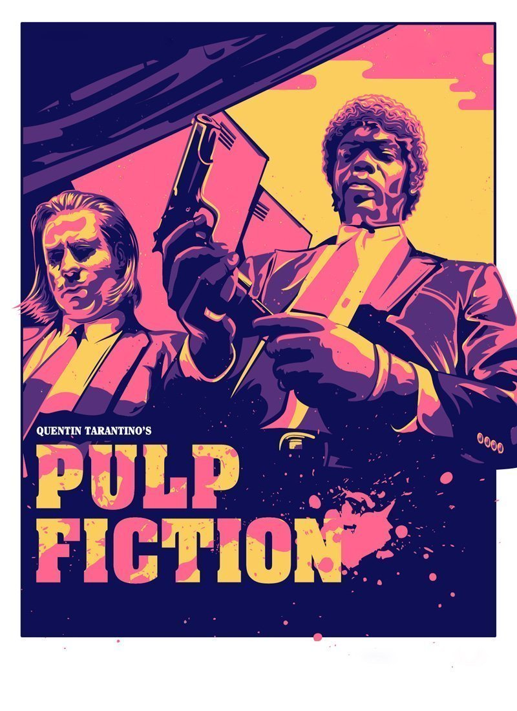

Top movies
The Shawshank Redemption
The Godfather
Pulp Fiction

The Shawshank Redemption
1.Language=english,hindi,tamil
2.Title=The Shawshank Redemption
3.overiew=Andy Dufresne (Tim Robbins) is sentenced to two consecutive life terms in prison for the murders of his wife and her lover and is sentenced to a tough prison. However, only Andy knows he didn't commit the crimes. While there, he forms a friendship with Red (Morgan Freeman), experiences brutality of prison life, adapts, helps the warden, etc., all in 19 years
4.popularity=cult classic
5.Genres=Drama,Crime
6.realese date=22 September 1994
7.origin_country=America
8.Budget=$200million
9.Revenue=$20 billion
10.visit here for more info=https://www.warnerbros.com/movies/shawshank-redemption
The God Father
 1.Language=english,hindi,tamil
2.Title=The God Father
3.overiew=Widely regarded as one of the greatest films of all time, this mob drama, based on Mario Puzo's novel of the same name, focuses on the powerful Italian-American crime family of Don Vito Corleone (Marlon Brando). When the don's youngest son, Michael (Al Pacino), reluctantly joins the Mafia, he becomes involved in the inevitable cycle of violence and betrayal. Although Michael tries to maintain a normal relationship with his wife, Kay (Diane Keaton), he is drawn deeper into the family business
4.popularity=regarded best movie ever and also got oscar
5.Genres=Drama,Crime
6.realese date=24 March 1972
7.origin_country=America
8.Budget=$200million
9.Revenue=$20 billion
10.visit here for more info=https://www.paramountpictures.com/movies/godfather-collection
1.Language=english,hindi,tamil
2.Title=The God Father
3.overiew=Widely regarded as one of the greatest films of all time, this mob drama, based on Mario Puzo's novel of the same name, focuses on the powerful Italian-American crime family of Don Vito Corleone (Marlon Brando). When the don's youngest son, Michael (Al Pacino), reluctantly joins the Mafia, he becomes involved in the inevitable cycle of violence and betrayal. Although Michael tries to maintain a normal relationship with his wife, Kay (Diane Keaton), he is drawn deeper into the family business
4.popularity=regarded best movie ever and also got oscar
5.Genres=Drama,Crime
6.realese date=24 March 1972
7.origin_country=America
8.Budget=$200million
9.Revenue=$20 billion
10.visit here for more info=https://www.paramountpictures.com/movies/godfather-collection
Pulp Fiction

1.Language=english,hindi,tamil
2.Title=Pulp Fiction
3.overiew=Vincent Vega (John Travolta) and Jules Winnfield (Samuel L. Jackson) are hitmen with a penchant for philosophical discussions. In this ultra-hip, multi-strand crime movie, their storyline is interwoven with those of their boss, gangster Marsellus Wallace (Ving Rhames) ; his actress wife, Mia (Uma Thurman) ; struggling boxer Butch Coolidge (Bruce Willis) ; master fixer Winston Wolfe (Harvey Keitel) and a nervous pair of armed robbers, "Pumpkin" (Tim Roth) and "Honey Bunny" (Amanda Plummer)
4.popularity=the great actor Samuel L Jackson is in it
5.Genres=Drama,Crime
6.realese date=14 October 1994
7.origin_country=America
8.Budget=$300million
9.Revenue=$30 billion
10.visit here for more info=https://www.miramax.com/movie/pulp-fiction/